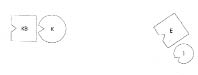

Dizim: “Senin yerine ben”
HELLINGER Ernst’e Şöyle geç. Ele almak istediğin nedir?
ERNST Beş yıl önce habis bir ur aldırdım. Üç yıl önce metastaz yaptı, şu anda damar iltihabı çekmekteyim. Ameliyatlar dışında…
HELLINGER Bunları bilmeme gerek yok. –Aile sistemine bakmak ister misin?
ERNST Evet, isterim.
HELLINGER Evli misin?
ERNST Evet.
HELLINGER Çocuğun var mı?
ERNST Bir tane, biri de yolda.
HELLINGER Sağlıklı olmayı çocuklarına borçlusun. Bunu biliyor musun?
ERNST Biliyorum.
HELLINGER Yoksa seni izlerler. –Senin için şimdi iyi bir şey yapmamızda iyi bir motivasyon olur mu bu?
ERNST Evet, öyle de.
HELLINGER Köken ailende dikkat çekici bir şey var mı?
ERNST Dört çocuğuz. Anne tarafında özel bir şey yok. Çok büyük bir aile…
HELLINGER Ya kardeşlerin? Ölen ya da ölü doğan var mı aralarında?
ERNST Babam da cilt kanseri, kız kardeşim ve ağabeyim de kanser.
HELLINGER Of! Ne kadar üst üste gelmiş. –Ya babanın ailesi?
ERNST Babam yedi sekiz yaşlarındayken büyükbabam ölmüş…
HELLINGER Ölüm nedeni?
ERNST Vücudundaki yeniden harekete geçen bir obüs parçası diye anlatılır. Kan zehirlenmesine yol açmış. Ardından büyükbabam aniden ölmüş.
HELLINGER Babanın kaç kardeşi vardı?
ERNST Bir üvey kız kardeşi.
HELLINGER Hangi taraftan?
ERNST Babasının ilk evliliğinden. Babamın büyüğüydü.
HELLINGER İlk eşe ne olmuş?
ERNST Bildiğim kadarıyla ya doğum sırasında ya da bundan kısa bir süre sonra kendini pencereden atmış. Nedenini bilmiyorum.
HELLINGER Önemli kişi o. Ben yine de güncel ailenle başlayacağım. Aileni diz; yani eşin ve çocuğunu. Çocuk kaç yaşında?
ERNST Dört.
1. Resim
E Erkek (=Ernst)
K Kadın
1 İlk çocuk, kız
HELLINGER Erkek nasıl?
ERKEK Kendimi böyle kuşatılmış hissediyorum. Kımıldayacak yerim yok. Bu bir yandan güzel, bir yandan çok fazla geliyor.
HELLINGER Kadın nasıl?
KADIN Çok sıkışık, ben de bakışlarımı karşıya çeviriyorum.
HELLINGER Kız nasıl?
İLK ÇOCUK Anneden biraz uzaklaşma eğilimindeyim.
Hellinger adamı ailenin dışına yerleştirir.
2. Resim
HELLINGER Erkeğe Şimdi nasılsın?
ERKEK Şimdi de çok uzağım.
HELLINGER Duygularına eğil. Bu senin için daha mı iyi, daha mı kötü?
ERKEK Birazcık daha iyi.
Erkek uzaklaşır uzaklaşmaz anne kız karşılıklı güler.
HELLINGER gruba Tuhaf! Görüyor musunuz?
Anne kız kahkahalarla gülmektedir.
HELLINGER Görüyor musunuz? İşte Ernst onlar için yok olmak zorunda. Ernst’e Öyle mi?
Ernst başıyla onaylar.
HELLINGER Ne diyorsun buna?
ERNST Şu anda buna bir şey söyleyebilecek durumda değilim.
HELLINGER Evet, zor.
ERNST Hmm!
HELLINGER Karının ailesinde ne olmuş?
ERNST Onun da babası kanserden ölmüş.
HELLINGER Kaç yaşında ölmüş?
ERNST Tam olarak bilmiyorum. Altmış, yetmiş filan. Ama o sırada karısından ayrıymış.
HELLINGER Neden ayrılmış?
ERNST Bildiğim kadarıyla kadın onu göndermiş.
HELLINGER Kadın mı göndermiş?
ERNST Ona İsviçre’de bir iş bulmuş.
Grupta gülüşmeler
HELLINGER gruba İşte size tıpatıp aynı durum. Annenin kocasına yaptığını şimdi de kızı kendi kocasına yapıyor. Aynı şey olduğu gibi tekrarlanıyor.
Ernst’e Karının babasını dizime ekle şimdi.
3. Resim
KB Kadının babası
HELLINGER Kadında ne değişti?
KADIN Geriye doğru gidip babama yaslanma itkisi hissediyorum.
HELLINGER Yap o zaman.
4. Resim
HELLINGER Dinamik tam olarak şöyle muhtemelen:
Hellinger kadının babasının sırtını çevirir, kadını da onu izlemesi için babanın arkasına yerleştirir.
5. Resim
HELLINGER Kadının babası nasıl?
KADININ BABASI Bu tarafa bakmak çok daha iyi.
HELLINGER Kadın nasıl?
KADIN Daha iyi. Babama arkasından sarılmak istiyorum.
HELLINGER gruba Kadının dinamiği, “seni izliyorum”. Peki giden kim? –Kocası. Erkekler dost canlısı varlıklar, bunu artık dile getirmek zorundayız! Grupta gülüşme ve alkışlar.
Hellinger adamın yüzünü çevirir, kızı yanına yerleştirir.
6. Resim

HELLINGER Erkek nasıl böyle?
ADAM Böyle daha iyi. Artık o kadar yalnız değilim.
HELLINGER Kız şimdi nasıl?
İLK ÇOCUK Ben iyiyim.
HELLINGER Ernst’e Bu, sistemdeki gizli dinamik. Gördüğün gibi iyi bir dinamik de değil.
ERNST İşin içinde bir de şiş bir karın var diye düşünüyorum (karısı hamiledir). Durum bununla da ilgili.
HELLINGER Bu bir şey değiştirmez. Burada da bir şey değiştirmedi zaten.
ERNST Ama kız bir değişikliğe yol açtı.
HELLINGER Nasıl?
ERNST Adam kendini o kadar yalnız hissetmez oldu.
HELLINGER Evet, öyle oldu. Kız babasına gitmelidir. Ama burada soru, karının nasıl kurtarılabileceği.
ERNST Babasından koparak.
HELLINGER Hayır, hayır, bu olmaz!
ERNST Yani artık onun peşinden gitmek istememesiyle.
HELLINGER Annesini dizime eklemek durumundayız şimdi. Sonra ne olduğuna bakarız. Annesini yerleştir!
Gruba Böyle bir dizim yapıldığında çoğu zaman öncelikle sistemin eğilimli olduğu uç nokta gösterilir. Bunun ardından başka çözümlerin de olup olmadığına bakılır. Çoğu durumda başka çözüm yoktur ama danışan için başka çözümlerin en azından aranması önem taşır.
7. Resim

KA Kadının annesi
HELLINGER Kadın şimdi nasıl?
KADIN Daha iyi. Anneme gitmek istiyorum.
HELLINGER Git.
8. Resim
Kadın annesine öfkeyle bakar.
HELLINGER gruba Kadın şimdi bu öfkeyle kimi temsil ediyor? –Aileden gönderilen babayı. Peki babanın öfkesi aslında kime yönelmeli? –Kadının annesine. Ya gerçekte kime patlıyor?
KATILIMCILAR Kocaya.
HELLINGER Kocaya. Buna çifte aktarım adı verilir.
Kadının babasına Şimdi nasılsın?
KADININ BABASI Karımı sol tarafımda hissettim.
HELLINGER Yan dön. Kızını senin yanına yerleştirelim, karının da sırtını çevirelim.
9. Resim
HELLINGER Şimdi nasıl?
KADIN Öfke duyuyorum. Annenin arkasını dönüp gitmesini istemiyorum.
KADININ BABASI Ben şimdi çok daha iyiyim.
Grupta gülüşmeler
HELLINGER Çocuklar işte! Her iki ebeveyne de bağlıdırlar.
HELLINGER Kadının annesi nasıl?
KADININ ANNESİ Onlarla ilişkim pek az.
HELLINGER Doğru. Biraz daha uzaklaş.
10. Resim
HELLINGER gruba Kadının annesinin ailesinde neler olduğunu, neden uzaklaşma eğiliminde olduğunu bilmiyoruz. Ama bunu bir yana bırakıp bu aile içinde bir çözüm arayalım.
Kadının temsilcisine Çözümü arayayım mı?
KADIN Evet. Güler.
Hellinger çözüm resmini oluşturur.
11. Resim
HELLINGER Böyle nasıl?
KADIN Daha iyi. Daha iyi nefes alabildiğimi fark ediyorum. Bir anda buranın benim yerim olduğu hissi doğdu içimde. Daha önce nereye ait olduğumu bilemiyordum.
ADAM Karımın çok daha fazla benim yanımda olduğunu hissediyorum. İyi bir yakınlık bu. Daha önceki gerçek değildi.
İLK ÇOCUK Şimdi artık ana babam var.
KADININ BABASI Kendimi yüce gönüllü algılıyorum. Güler.
HELLINGER Ernst’e Kendi yerini almak ister misin?
Ernst dizimdeki yerini alır. Kadınla erkek aralarında gülüşüp şakalaşırlar.
HELLINGER Demek kimi zaman iyi bir çözüm olabiliyormuş da. Ernst’e Önce ön plandaki sorununu ele aldım; güncel aileni. Kanserin aile dinamiğinle ilgisi olup olmadığını bilmiyoruz. Bunun için köken aileni de dizmemiz gerekirdi. Bir seferde çok fazla şey yapmamam gerekiyor. Anlaştık mı?
ERNST Tamamdır.
HELLINGER Pekâlâ, bu kadar.
Dizimler etkilerini içsel resim yoluyla gösterir
HELLINGER Bu konuda sorusu olan var mı?
KATILIMCI Daha önceki dizimlerde ilgili kişilerin kendileri bir şeyler yapabildi. Babayı onurlandırdı ya da sevgiyi hissedebildiler. Bu dizimdeyse çözüm kadına bağlıydı. Burada ilgili kişi ne yapabilir?
HELLINGER Bu dizimler etkilerini değişime uğramış içsel resim yoluyla gösterir. Ernst’in karısı ve karısının kilitlenmesine ilişkin farklı bir içsel resmi var şimdi ve bu, etkisini göstermeye başladı bile. Ancak burada olanları karısına anlatmak da zorunda.
Ernst’e Ona her şeyi olduğu gibi, yorum katmaksızın anlat. Yalnızca anlat ve anlattığının etkisini göstereceğine güven.
Gruba Doğru olan, açıklamaya ihtiyaç duymaz. Burada olanı anlatması yeterlidir. Bunun dışındaki her şey, karısının içinde taşıyacağı resme dönüşür. Anlattıktan sonra da beklemek zorunda. Ama karısıyla ilişkisi şimdiden değişti. Zira buradan eve gittiğinde karısı Ernst’i farklı bir şekilde algılayacak. Çünkü Ernst, içinde karısının farklı bir resmini taşıyor. Bundan fazlasını yapmam; yapmam doğru olmaz.
Terapistin önemli ölçüde geride durması gerekir. Ele aldığını “sonuna dek” işlememeli, çalışmasını gücün tepe noktasına ulaştığı yerde kesmeli ve sistemi kendi olumlu güçlerine bırakmalıdır.